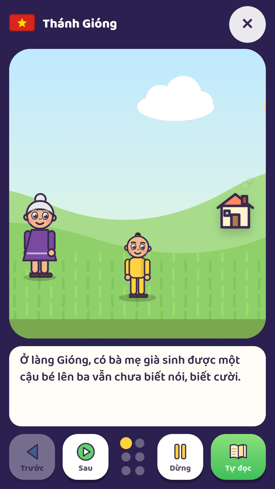
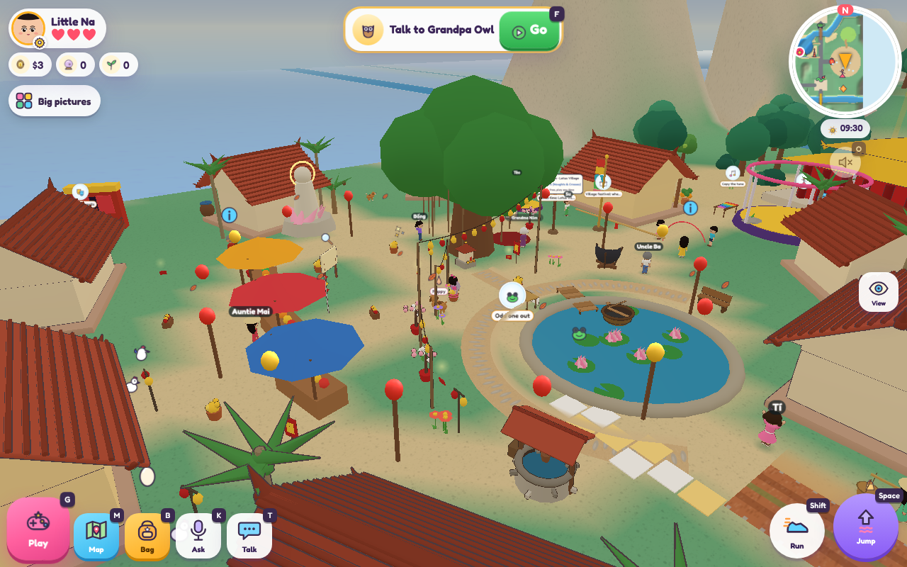

VUI CHƠI • KHÁM PHÁ • CÙNG GIA ĐÌNH
Nghe truyện Việt,
cùng vui lễ hội
Gần hơn với những câu chuyện quê nhà

Thánh Gióng
Không khí Tết trong gameThánh Gióng • Cây khế
Tết • Trung Thu
Khám phá truyện Việt và không gian lễ hội theo mùa